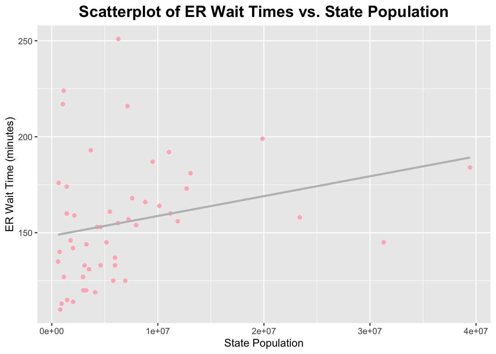

Attaching package: 'kableExtra'
The following object is masked from 'package:dplyr':
group_rows
library(readr)library(here)
here() starts at /Users/nataliecann/Desktop/MADA/nataliecann-MADA-portfolio
library(naniar)library(GGally)
Registered S3 method overwritten by 'GGally':
method from
+.gg ggplot2
library(yardstick)
Attaching package: 'yardstick'
The following object is masked from 'package:readr':
spec
library(caret)
Loading required package: lattice
Attaching package: 'caret'
The following objects are masked from 'package:yardstick':
precision, recall, sensitivity, specificity
The following object is masked from 'package:purrr':
lift
Loading required package: Matrix
Attaching package: 'Matrix'
The following objects are masked from 'package:tidyr':
expand, pack, unpack
Loaded glmnet 4.1-8
Attaching package: 'janitor'
The following objects are masked from 'package:stats':
chisq.test, fisher.test
library(kknn)
Attaching package: 'kknn'
The following object is masked from 'package:caret':
contr.dummy
About the Data:
This exercise will use the tidy tuesday data uploaded April 8th, 2025 (https://github.com/rfordatascience/tidytuesday/tree/main/data/2025/2025-04-08).
This data is from the Center for Medicare and Medicaid Services (CMS) and pertains to emergency room wait time variation between states.
Loading in the Data:
The readme.md file specified several ways by which the data for this week could be brought in. Since I was able to download the data (from the link specified above), I will use the read_csv function from the readr package to load in the data.
data <-read_csv(here("tidytuesday-exercise", "care_state.csv"))
Rows: 1232 Columns: 8
── Column specification ────────────────────────────────────────────────────────
Delimiter: ","
chr (5): state, condition, measure_id, measure_name, footnote
dbl (1): score
date (2): start_date, end_date
ℹ Use `spec()` to retrieve the full column specification for this data.
ℹ Specify the column types or set `show_col_types = FALSE` to quiet this message.
Preliminary Data Exploration:
First, I will perform a few simple functions to get a basic sense of the data.
head(data)
# A tibble: 6 × 8
state condition measure_id measure_name score footnote start_date end_date
<chr> <chr> <chr> <chr> <dbl> <chr> <date> <date>
1 AK Healthcare… HCP_COVID… Percentage … 7.3 <NA> 2024-01-01 2024-03-31
2 AK Healthcare… IMM_3 Healthcare … 80 <NA> 2023-10-01 2024-03-31
3 AK Emergency … OP_18b Average (me… 140 25, 26 2023-04-01 2024-03-31
4 AK Emergency … OP_18b_HI… Average tim… 157 25, 26 2023-04-01 2024-03-31
5 AK Emergency … OP_18b_LO… Average tim… 136 25, 26 2023-04-01 2024-03-31
6 AK Emergency … OP_18b_ME… Average tim… 136 25, 26 2023-04-01 2024-03-31
dim(data)
[1] 1232 8
summary(data)
state condition measure_id measure_name
Length:1232 Length:1232 Length:1232 Length:1232
Class :character Class :character Class :character Class :character
Mode :character Mode :character Mode :character Mode :character
score footnote start_date end_date
Min. : 1 Length:1232 Min. :2023-01-01 Min. :2023-12-31
1st Qu.: 70 Class :character 1st Qu.:2023-04-01 1st Qu.:2024-03-31
Median : 93 Mode :character Median :2023-04-01 Median :2024-03-31
Mean :134 Mean :2023-04-05 Mean :2024-03-14
3rd Qu.:193 3rd Qu.:2023-04-01 3rd Qu.:2024-03-31
Max. :730 Max. :2024-01-01 Max. :2024-03-31
NA's :155
There are 8 variables and 1232 observations. The variable names are: state, condition, measure_id, measure_name, score, footnote, start_date, and end_date. The variables that are characters are: state, condition, measure_id, measure_name, and footnote. The variables that are numeric are: score, start_date, and end_date. It looks like there are several scores for variables (under the measure_name variable) for each state (under several conditions). It appears as though score and footnote have some missing values.
I have placed the data dictionary below for ease: |variable |class |description | |:————|:———|:————————————-| |state |character |The two-letter code for the state (or territory, etc) where the hospital is located. | |condition |character |The condition for which the patient was admitted. Six categories of conditions are included in the data. | |measure_id |character |The ID of the thing being measured. Note that there are 22 unique IDs but only 21 unique names. | |measure_name |character |The name of the thing being measured. Note that there are 22 unique IDs but only 21 unique names. | |score |double |The score of the measure. | |footnote |character |Footnotes that apply to this measure: 5 = “Results are not available for this reporting period.”, 25 = “State and national averages include Veterans Health Administration (VHA) hospital data.”, 26 = “State and national averages include Department of Defense (DoD) hospital data.”. | |start_date |date |The date on which measurement began for this measure. | |end_date |date |The date on which measurement ended for this measure. |
Formulation of Question and Hypothesis:
Here are the two questions from within the readme.md script: - Is there a connection between state populations and wait times? - Which conditions have the longest wait times? The shortest?
I would like to go more specific and assess if there is a connection between state populations and wait times in the Emergency Department.
Data Cleaning:
First, I will only obtain the data that is relevant to answering my question (measurement_name = Average (median) time patients spent in the emergency department before leaving from the visit A lower number of minutes is better AND condition = Emergency Department FOR EACH STATE). I will call this data set er_data.
data %>%filter(condition =="Emergency Department") %>%distinct(measure_name) %>%pull(measure_name)
[1] "Average (median) time patients spent in the emergency department before leaving from the visit A lower number of minutes is better"
[2] "Average time patients spent in the emergency department before being sent home A lower number of minutes is better (high)"
[3] "Average time patients spent in the emergency department before being sent home A lower number of minutes is better (low)"
[4] "Average time patients spent in the emergency department before being sent home A lower number of minutes is better (moderate)"
[5] "Average (median) time patients spent in the emergency department before leaving from the visit- Psychiatric/Mental Health Patients. A lower number of minutes is better"
[6] "Average time patients spent in the emergency department before leaving from the visit - Psychiatric/Mental Health Patients. A lower number of minutes is better (high)"
[7] "Average time patients spent in the emergency department before leaving from the visit - Psychiatric/Mental Health Patients. A lower number of minutes is better (low)"
[8] "Average time patients spent in the emergency department before leaving from the visit - Psychiatric/Mental Health Patients. A lower number of minutes is better (moderate)"
[9] "Average time patients spent in the emergency department before leaving from the visit - Psychiatric/Mental Health Patients. A lower number of minutes is better (very high)"
[10] "Percentage of patients who left the emergency department before being seen Lower percentages are better"
[11] "Percentage of patients who came to the emergency department with stroke symptoms who received brain scan results within 45 minutes of arrival Higher percentages are better"
er_data <- data %>%filter( condition =="Emergency Department", measure_name =="Average (median) time patients spent in the emergency department before leaving from the visit A lower number of minutes is better" ) %>%# obtain data of interestselect(state, condition, measure_id, measure_name, score) %>%# select my columnsrename(er_wait_score = score) %>%# rename so that it relfects emergency deptsfilter(!is.na(er_wait_score)) # drop missing values if there are any
Now, I need to add a column that shows the population size for each state. First, I will read in this states population dataset (from: https://www.britannica.com/topic/largest-U-S-state-by-population).
[1] "U.S. state" "population: estimate (2024 est.)"
[3] "population: census (2020)" "...4"
[5] "...5"
Now, I want to add the state population data to the er_data dataset. I will do this with left join.
er_data_with_pop <- er_data %>%left_join(states_pop, by =c("state"="U.S. state"))head(er_data_with_pop)
# A tibble: 6 × 9
state condition measure_id measure_name er_wait_score population: estimate…¹
<chr> <chr> <chr> <chr> <dbl> <dbl>
1 AK Emergency … OP_18b Average (me… 140 740133
2 AL Emergency … OP_18b Average (me… 145 5157699
3 AR Emergency … OP_18b Average (me… 133 3088354
4 AZ Emergency … OP_18b Average (me… 168 7582384
5 CA Emergency … OP_18b Average (me… 184 39431263
6 CO Emergency … OP_18b Average (me… 133 5957493
# ℹ abbreviated name: ¹`population: estimate (2024 est.)`
# ℹ 3 more variables: `population: census (2020)` <dbl>, ...4 <lgl>, ...5 <lgl>
From viewing the data, I can see that PR and DC weren’t included in the population dataset. So, I will exclude them for this assignment.
er_data_with_pop <- er_data_with_pop %>%filter(state !="PR"& state !="DC")dim(er_data_with_pop)
[1] 50 9
I can see that this worked as we now only have 50 (instead of 52) observations.
Now, I will remove the condition, measure_id, and measure_name columns as they are no longer needed since I have confirmed that only the correct data is present. I will also remove the two random columsn R added (…4 and …5).
Note that I will use the 2024 population since this is more recent.
Exploratory Data Analysis:
I will first obtain a summary of the wait time scores and the populations among the states.
summary(er_data_with_pop$er_wait_score)
Min. 1st Qu. Median Mean 3rd Qu. Max.
110.0 133.0 153.5 155.4 171.8 251.0
summary(er_data_with_pop$population_2024)
Min. 1st Qu. Median Mean 3rd Qu. Max.
587618 2002580 4593056 6788175 7864231 39431263
The average median wait time for the ER in US states (exluding DC and PR) is 155.4 minutes. The range is 251-110 = 141 minutes. The average population in US states (excluding DC and PR) is 6,788,175. The range is 39431263-587618 = 38843645. This is a much larger range than the wait time scores.
Next, I will obtain a histogram for ER wait times in US staets.
ggplot(er_data_with_pop, aes(x = er_wait_score)) +geom_histogram(binwidth =5, fill ="skyblue", color ="black") +labs(title ="Distribution of Emergency Room Wait Times", x ="Wait Time (minutes)", y ="Frequency") +theme(plot.title =element_text(hjust =0.5, # center the titleface ="bold", # make title boldsize =16) # make title bigger )
As you can tell, it looks like this histogram is slightly skewed to the right.
Now, I will obtain a histogram for the populations of US states.
ggplot(er_data_with_pop, aes(x = population_2024)) +geom_histogram(binwidth =500000, fill ="lightgreen", color ="black") +labs(title ="Distribution of State Populations", x ="Population", y ="Frequency") +theme(plot.title =element_text(hjust =0.5, # center the titleface ="bold", # make title boldsize =16) # make title bigger )
It looks like this histogram is skewed to the right.
cor(er_data_with_pop$er_wait_score, er_data_with_pop$population_2024, use ="complete.obs")
[1] 0.2517527
It looks like there is a weak positive correlation between the ER wait times and the population size of the states (0.2517527).
I will now create a scatterplot to visualize this correlation.
ggplot(er_data_with_pop, aes(x = population_2024, y = er_wait_score)) +geom_point(color ="lightpink") +labs(title ="Scatterplot of ER Wait Times vs. State Population", x ="State Population", y ="ER Wait Time (minutes)") +geom_smooth(method ="lm", se =FALSE, color ="gray") +theme(plot.title =element_text(hjust =0.5, # center the titleface ="bold", # make title boldsize =16) # make title bigger )
`geom_smooth()` using formula = 'y ~ x'

There is alot of clustering in the lower left corner of this graph. There may be a few outliers, however, I will keep them in the dataset because I need to account for these states.
Analysis and Models:
I will now split the data into train and test data.
set.seed(123)cv_folds <-vfold_cv(train_data, v =5)
Now, I will define the ‘recipes’ for the 3 models (and the basic model recipe with my predictor and outcome). The three models I will use are: linear regression, random forest, and KNN.
# Basic recipe :)model_recipe <-recipe(er_wait_score ~ population_2024, data = train_data)# Linear Regressionlm_spec <-linear_reg() %>%set_engine("lm") %>%set_mode("regression")lm_wf <-workflow() %>%add_model(lm_spec) %>%add_recipe(model_recipe)# Random Forestrf_spec <-rand_forest(mtry =1, trees =500, min_n =5) %>%set_engine("ranger") %>%set_mode("regression")rf_wf <-workflow() %>%add_model(rf_spec) %>%add_recipe(model_recipe)# KNNknn_spec <-nearest_neighbor(neighbors =tune()) %>%set_engine("kknn") %>%set_mode("regression")knn_wf <-workflow() %>%add_model(knn_spec) %>%add_recipe(model_recipe)knn_grid <-tibble(neighbors =seq(1, 20, by =2))
Now, I will fit all the models and obtain their metrics.
# Linear Regressionlm_fit <-fit_resamples( lm_wf,resamples = cv_folds,metrics =metric_set(rmse, rsq))collect_metrics(lm_fit)
# A tibble: 2 × 6
.metric .estimator mean n std_err .config
<chr> <chr> <dbl> <int> <dbl> <chr>
1 rmse standard 32.3 5 4.36 Preprocessor1_Model1
2 rsq standard 0.127 5 0.0448 Preprocessor1_Model1
# Random Forestrf_fit <-fit_resamples( rf_wf,resamples = cv_folds,metrics =metric_set(rmse, rsq))collect_metrics(rf_fit)
# A tibble: 2 × 6
.metric .estimator mean n std_err .config
<chr> <chr> <dbl> <int> <dbl> <chr>
1 rmse standard 36.0 5 6.68 Preprocessor1_Model1
2 rsq standard 0.184 5 0.0654 Preprocessor1_Model1
# A tibble: 24 × 8
.metric .estimator mean n std_err .config model neighbors
<chr> <chr> <dbl> <int> <dbl> <chr> <chr> <dbl>
1 rmse standard 32.3 5 4.36 Preprocessor1_Model1 Line… NA
2 rsq standard 0.127 5 0.0448 Preprocessor1_Model1 Line… NA
3 rmse standard 36.0 5 6.68 Preprocessor1_Model1 Rand… NA
4 rsq standard 0.184 5 0.0654 Preprocessor1_Model1 Rand… NA
5 rmse standard 47.6 5 7.48 Preprocessor1_Model01 KNN 1
6 rsq standard 0.188 5 0.0784 Preprocessor1_Model01 KNN 1
7 rmse standard 36.3 5 5.98 Preprocessor1_Model02 KNN 3
8 rsq standard 0.154 5 0.0436 Preprocessor1_Model02 KNN 3
9 rmse standard 32.4 5 5.60 Preprocessor1_Model03 KNN 5
10 rsq standard 0.174 5 0.0615 Preprocessor1_Model03 KNN 5
# ℹ 14 more rows
Linear Regression: The RMSE is 32.25 and the R-squared is 0.127 (indicates that approximately 12.7% of the variance is explained by the model).
Random Forest: The RMSE is 35.59 and the R-squared is 0.194 (indicates that approximately 19.4% of the variance is explained by the model).
KNN: The best RMSE is the KNN model with 13 neighbors, RMSE = 30.32 (corresponding R-squared of 0.195). The best R-squared is the KNN model with 11 neighbors, R-squared = is 0.201 (corresponding RMSE of 30.35).
Now, I will obtain residual plots for the three models.
# Calculate residuals helper functionget_residuals <-function(model_fit, data, model_name) {predict(model_fit, new_data = data) %>%bind_cols(data) %>%mutate(residual = er_wait_score - .pred,model = model_name)}# Linear Regression Residualslm_final <-fit(lm_wf, data = train_data)lm_resid <-get_residuals(lm_final, train_data, "Linear Regression")# Random Forest Residuals rf_final <-fit(rf_wf, data = train_data)rf_resid <-get_residuals(rf_final, train_data, "Random Forest")# KNN Residualsbest_k <-select_best(knn_fit, metric ="rmse")knn_final_wf <-finalize_workflow(knn_wf, best_k)knn_final <-fit(knn_final_wf, data = train_data)knn_resid <-get_residuals(knn_final, train_data, "KNN")# Plot! all_resid <-bind_rows(lm_resid, rf_resid, knn_resid)ggplot(all_resid, aes(x = .pred, y = residual, color = model)) +geom_point(alpha =0.7, size =2) +geom_hline(yintercept =0, linetype ="dashed", color ="black") +facet_wrap(~model) +labs(title ="Residual Plots by Model",x ="Predicted ER Wait Time",y ="Residual (Actual - Predicted)",color ="Model") +theme_minimal() +theme(legend.position ="none") +scale_color_manual(values =c("Linear Regression"="cadetblue3","Random Forest"="green3","KNN"="palevioletred2")) +theme(plot.title =element_text(hjust =0.5, # center the titleface ="bold", # make title boldsize =16) # make title bigger )
Best Model: Random Forest
I would say that the random forest model performed the best. While it doesn’t have the lowest RMSE, it has the least scatter in the plot above. You can see that the residuals are closer to the dashed line at 0. The random forest’s RMSE value is 35.59 and its R-squared value is 0.194. It can be noted that all of the RMSE and R-squared values were relatively similar. So when it came to the residual plots above, I saw the least scatter within the random forest plot (which is ultimately what led me to make this decision).
Test Data with Random Forest Model:
Now, per class instruction, I will run the random forest model on the test data. It should be noted that the test data is very small in this exercise
# Final fit on full training datarf_final <-fit(rf_wf, data = train_data)# Predict on test datarf_predictions <-predict(rf_final, new_data = test_data) %>%bind_cols(test_data)# Calculate metrics (RMSE, R-squared) on the test datarf_metrics_test <- rf_predictions %>%metrics(truth = er_wait_score, estimate = .pred)# Print performance metricsprint(rf_metrics_test)
# A tibble: 3 × 3
.metric .estimator .estimate
<chr> <chr> <dbl>
1 rmse standard 20.7
2 rsq standard 0.358
3 mae standard 17.8
# Residuals on test datarf_predictions <- rf_predictions %>%mutate(residual = er_wait_score - .pred)# Plot residualsggplot(rf_predictions, aes(x = .pred, y = residual)) +geom_point(alpha =0.7, size =2, color ="orange") +geom_hline(yintercept =0, linetype ="dashed", color ="gray") +labs(title ="Residual Plot: Random Forest (Test Data)", x ="Predicted ER Wait Time", y ="Residual (Actual - Predicted)") +theme_minimal() +theme(plot.title =element_text(hjust =0.5, # center the titleface ="bold", # make title boldsize =16) # make title bigger )
The RMSE is 21.28, and the R-squared value is 0.334 (indicating that approximately 33.4% of the variance is explained by the model). The residuals are somewhat scattered (ranging from roughly -40 to 40).
Summary and Disucssion:
In this tidy-tuesday exercise, I aimed to assess whether there is a connection between the size of a state’s population and their median emergency department wait times (in minutes). As described previously, the data was obtained from CMS and includes information about emergency department (and others) wait times for various states. After performing some basic data cleaning and exploration, I decided to look specifically at median emergency department wait times (in minutes). Since this dataset did not include the population size of each state, I had to obtain this information from elsewhere online. The dataset I used did not include the populations of DC and PR, therefore I decided to exclude them from my analysis.
After cleaning my data and running some basic summary functions on it, I found that the average median emergency department wait time across all states was 155.4 minutes, with a range of 110 to 251 minutes (141 minutes). After assessing the histogram for median emergency department wait times, I found that it was right-skewed. As for population, I found that the average population in US states is 6,788,175 people. The range for state population was found to be 587618 to 39431263 people, which is much larger than the range for median emergency department wait times. The histogram for state population was found to be right-skewed as well, but to a greater degree than the skewness of the median emergency department wait times histogram. I then calculated the correlation between median emergency department wait times and state population sizes. I found a correlation coefficient of 0.2517527, which indicates a weak postitive relationship. Then, I ran a scatterplot between the two variables and found that most of the points were clustered in the lower left corner of the graph. A few points deviated from the overall pattern. However, I decided to keep in the potential outliers, since each US state should be represented in this analysis. Overall, this reveals that larger states tend to have slightly longer ER wait times. However, this relationship is not strong.
After setting up my test and train data (as well as cross-validation folds), I developed three models for this exercise. The first model was a simple linear regression model; it had an RMSE of 32.25 and an R-squared value of 0.127. Then I ran a scatterplot of the residuals and found that they appeared to be quite scattered. The next model I developed was the random forest model; it had an RMSE of 35.59 and an R-squared value of 0.194. The residuals within the residual scatterplot appeared to be less scattered about the 0 line. The last model that I chose to develop was the KNN model; the best RMSE was found to be 30.32 (with 13 neighbors) and the best R-squared value was 0.201 (with 11 neighbors). The residuals for this model were also quite scattered. After comparing all three models, I decided that the random forest model was the best due to it having the least scatter of residuals (despite it not having the lowest RMSE value). I then ran the random forest model on the test data and found that the RMSE was 21.28 and the R-squared value was 0.334. the residuals for this model were somewhat scattered. However, I believe that they would be more scattered if I had chosen another model to run with.
Overall, my analysis for tidy-tuesday suggests that state population had a weak positive association with median emergency department wait times (in minutes). However, it should be noted that the analysis would be enriched by inclusion of other elements in the dataset, such as the number of hospitals within each state/hopsital density.
# Create a data frame with the results, including correlation for ER wait time and populationmodel_results <-data.frame(Model =c("Linear Regression", "Random Forest", "KNN (13 neighbors)", "Correlation between ER wait time and State Population"),Correlation =c(NA, NA, NA, 0.15), RMSE =c(32.25, 35.59, 30.32, NA),R_squared =c(0.127, 0.194, 0.201, NA))# Use GT to format the tablelibrary(gt)# Create the GT tablemodel_results_gt <- model_results %>%gt() %>%tab_header(title ="Model Performance and Correlation Results" ) %>%cols_label(Model ="Model / Metric",Correlation ="Correlation between ER wait time and State Population",RMSE ="Root Mean Squared Error (RMSE)",R_squared ="R-squared" ) %>%tab_spanner(label ="Model Metrics",columns =c(RMSE, R_squared) ) %>%tab_style(style =list(cell_borders(sides ="all", color ="gray", weight =px(0.5)) ),locations =cells_body(columns =c(Correlation, RMSE, R_squared)) )# Print the GT tablemodel_results_gt
Model Performance and Correlation Results
Model / Metric
Correlation between ER wait time and State Population
Model Metrics
Root Mean Squared Error (RMSE)
R-squared
Linear Regression
NA
32.25
0.127
Random Forest
NA
35.59
0.194
KNN (13 neighbors)
NA
30.32
0.201
Correlation between ER wait time and State Population
0.15
NA
NA
# Bind together the residuals for all models from both train and test dataall_resid_combined <-bind_rows( lm_resid %>%mutate(Color ="blue", Dataset ="Train"), rf_resid %>%mutate(Color ="red", Dataset ="Train"), knn_resid %>%mutate(Color ="green", Dataset ="Train"), rf_predictions %>%mutate(Color ="orange", Dataset ="Test"))# Plotting the combined residuals with the legendggplot(all_resid_combined, aes(x = .pred, y = residual, color = Color)) +geom_point(alpha =0.7, size =2) +geom_hline(yintercept =0, linetype ="dashed", color ="gray") +labs(title ="Residual Plots for Different Models and Datasets",x ="Predicted ER Wait Time",y ="Residual (Actual - Predicted)" ) +scale_color_manual(name ="Model/Dataset",values =c("blue", "red", "green", "orange"),labels =c("Linear Regression (Train)", "Random Forest (Train)", "KNN (Train)", "Random Forest (Test)") ) +theme_minimal() +theme(plot.title =element_text(hjust =0.5, face ="bold", size =16),legend.position ="right" )